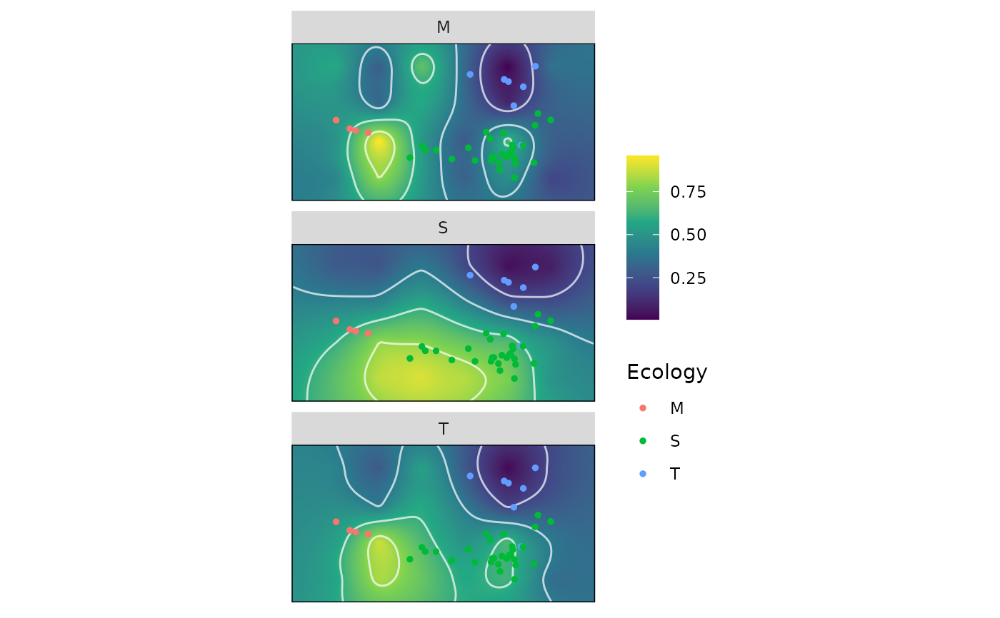

Compute optimally weighted adaptive landscapes by subgroup
calcWprimeBy.RdcalcWprimeBy() computes the optimally weighted adaptive landscape by searching through the adaptive landscapes formed from sets of weights and performance surfaces, and finding the set of weights that yields the greatest overall (average) fitness value (Z) across subsets of a sample dataset.
Arguments
- x
for
calcWprimeBy(), anall_lscpsobject; the output of a call tocalc_all_lscps.for
print.by_Wprime(), aby_Wprimeobject; the output of a call tocalcWprimeBy().for
print.summary.by_Wprime(), aby_Wprimeobject; the output of a call tosummary.by_Wprime().- by
a one-sided formula containing the grouping variable on the right hand side (e.g.,
~g) or a vector containing the subgrouping variable. When supplied as a formula, the grouping variable must be present in the global environment or in thenew_datacomponent in thekriged_surfacesobject originally supplied tocalc_all_lscps().- method
the method used to compute the optimal weights. Allowable options include
"chi-square"(the default),"quantile", or"max"."chi-square"and"quantile"involve averaging across the best several sets of weights, whereas"max"uses the singular best set of weights. Abbreviations allowed. SeecalcGrpWprimefor details.- quantile
when
methodis"chi-square"or"quantile", the top quantile used to determine the best sets of weights to be included in the average to compute the optimal set of weights. Should be a number between 0 and 1, with a low value indicating that only the few top sets of weights will be used. Ignored whenmethod = "max". SeecalcGrpWprimefor details.- digits
the number of significant digits to print.
- ...
passed to
print.defaultandprint.table.- object
a
by_Wprimeobject; the output of a call tocalcWprimeBy().
Details
calcWprimeBy() splits the sample data based on the by variable and then calls calcGrpWprime on each subset. The main benefit of using calcWprimeBy() is that the subgrouping variable is part of the output object and therefore can be used in plotting using plot.by_Wprime.
Value
A by_Wprime object contaning the following components:
- by
the subgrouping variable supplied to
by, stored as a factor and with a"by_name"attribute containing the name of the variable.- grp_Wprimes
a list of
grp_Wprimeobjects, one for each level of the subgrouping variable.
See also
calc_all_lscps for computing the landscapes which are to be optimized.
calcGrpWprime for finding optimal sets of weights for a single subgroup.
plot.by_Wprime for plotting the resulting adaptive landscapes.
Examples
data("warps")
data("turtles")
warps_fnc <- as_fnc_df(warps,
func.names = c("hydro", "fea"))
kr_surf <- krige_surf(warps_fnc, new_data = turtles)
#> [using ordinary kriging]
#> [using ordinary kriging]
#> [using ordinary kriging]
#> [using ordinary kriging]
grid_weights <- generate_weights(n = 3, data = kr_surf)
#> 4 rows generated
all_lscps <- calc_all_lscps(kr_surf,
grid_weights = grid_weights)
wprime_Ecology <- calcWprimeBy(all_lscps, by = ~Ecology)
wprime_Ecology
#> - Ecology == "M"
#>
#> Optimal weights:
#> Weight SE SD Min. Max.
#> hydro 0 NA NA 0 0
#> fea 1 NA NA 1 1
#>
#> Average fitness value at optimal weights:
#> Value SE SD Min. Max.
#> Z 0.7927 NA NA 0.7927 0.7927
#> -----------------------------------------
#> - Ecology == "S"
#>
#> Optimal weights:
#> Weight SE SD Min. Max.
#> hydro 1 NA NA 1 1
#> fea 0 NA NA 0 0
#>
#> Average fitness value at optimal weights:
#> Value SE SD Min. Max.
#> Z 0.7835 NA NA 0.7835 0.7835
#> -----------------------------------------
#> - Ecology == "T"
#>
#> Optimal weights:
#> Weight SE SD Min. Max.
#> hydro 0.5 0.2152 0.4303 0 1
#> fea 0.5 0.2152 0.4303 0 1
#>
#> Average fitness value at optimal weights:
#> Value SE SD Min. Max.
#> Z 0.218 0.001605 0.003211 0.2142 0.2217
#>
#> - method: chi-squared, quantile = 0.05
summary(wprime_Ecology)
#> Optimal weights by Ecology:
#> W_hydro W_fea Z
#> M 0.0000 1.0000 0.7927
#> S 1.0000 0.0000 0.7835
#> T 0.5000 0.5000 0.2180
plot(wprime_Ecology)
